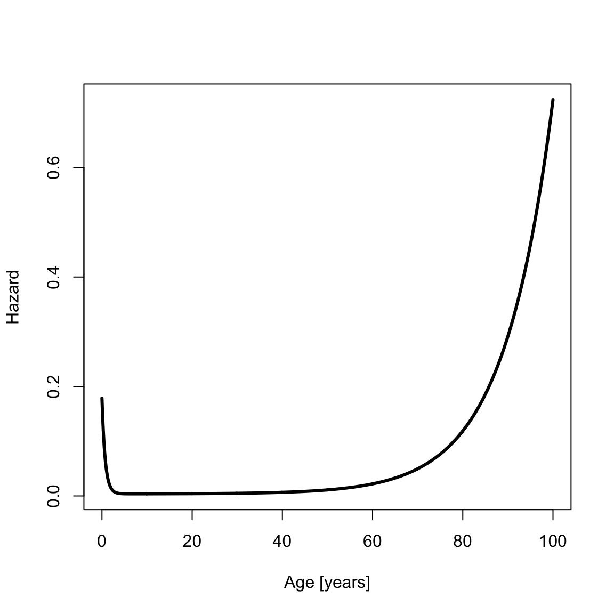
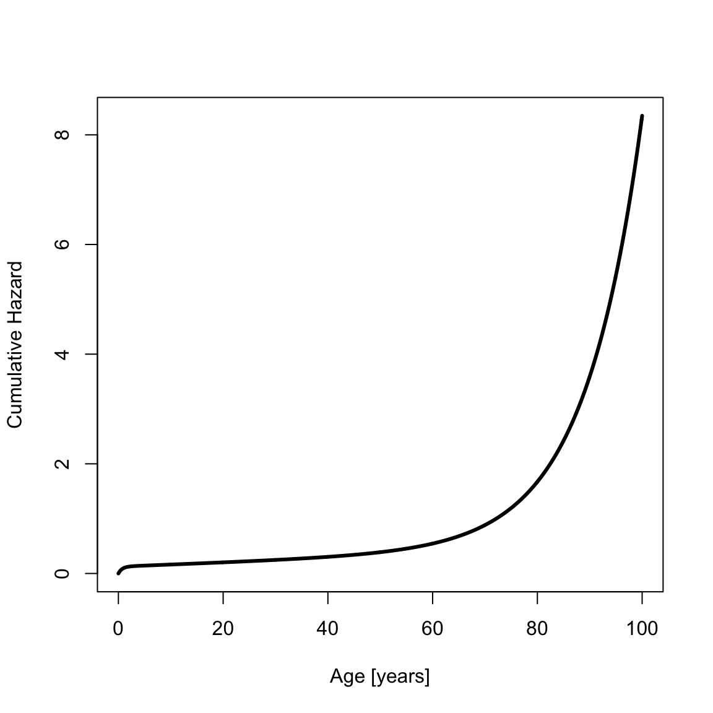
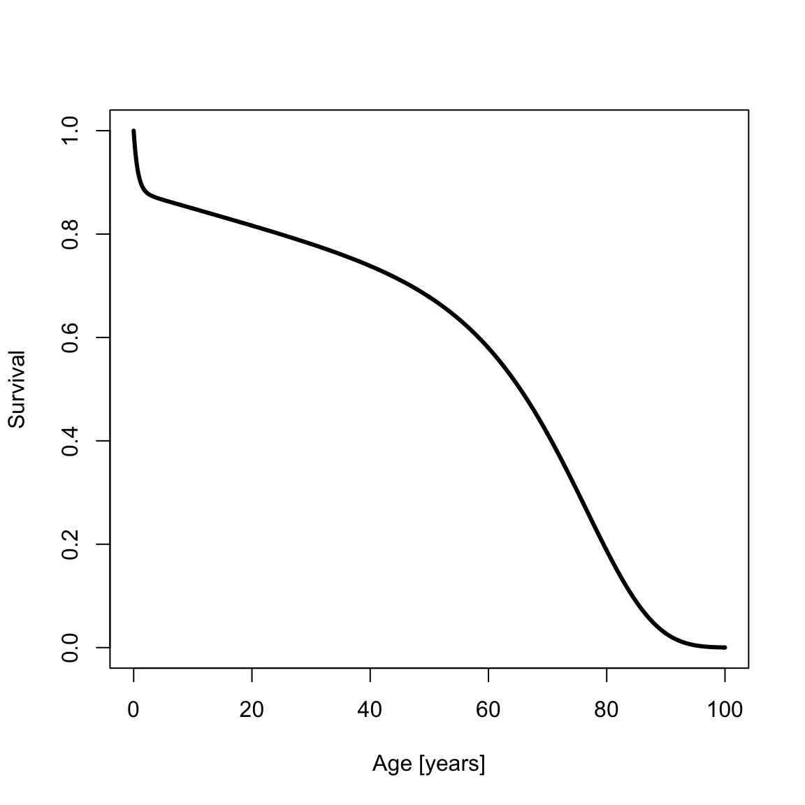
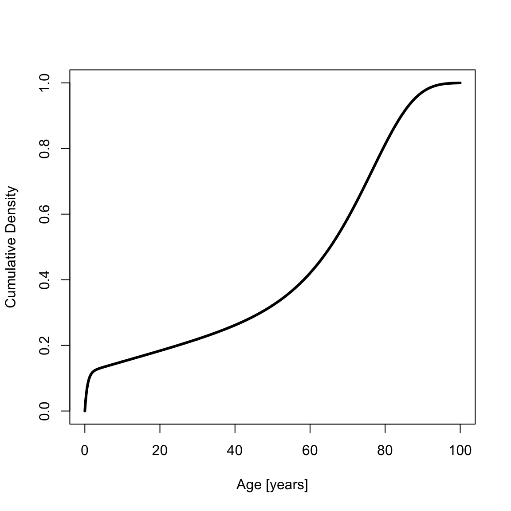
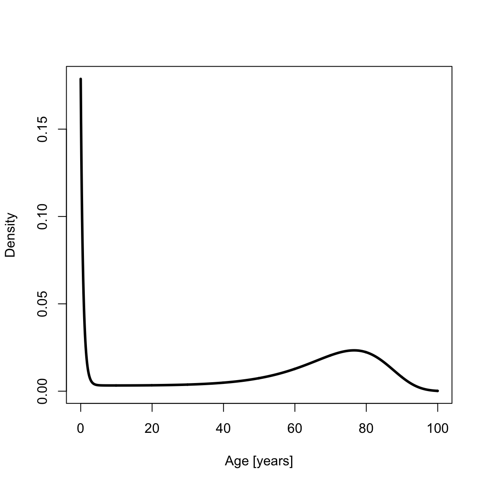
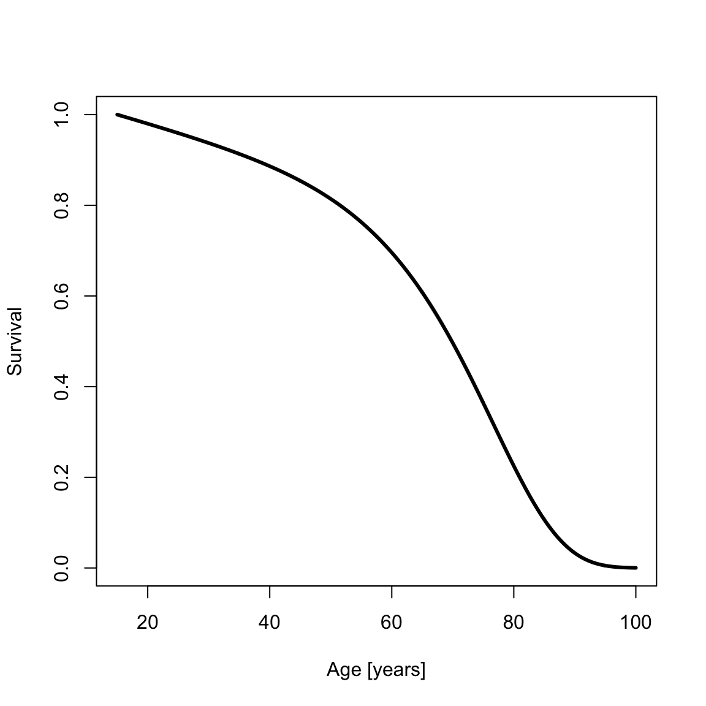
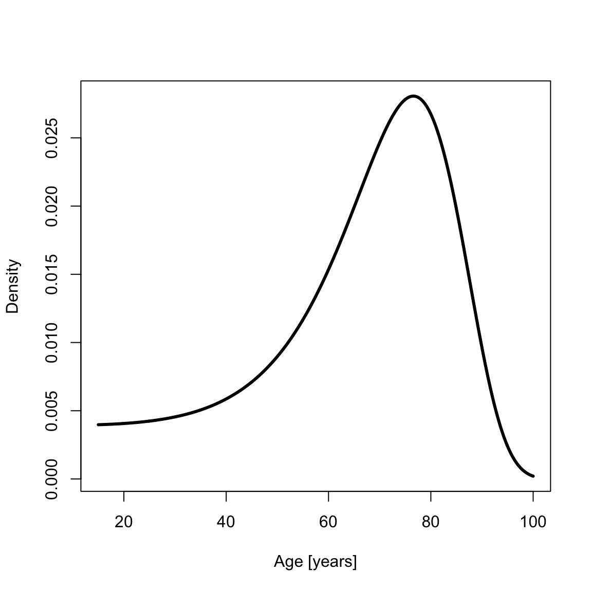
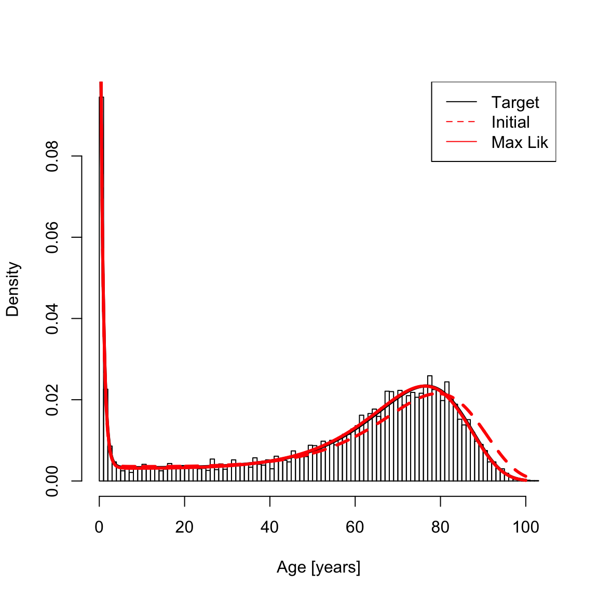

siler.RmdThe Siler mortality hazard is
\[\lambda(x) = a_1 \exp(-a_2 \, x) + a_3 + a_4 \exp(a_5 \, x) \mbox{,}\]
where x is age-at-death and
\[\mathbf{a} = \begin{bmatrix}a_1&a_2&a_3&a_4&a_5\end{bmatrix}^T\]
is the parameter vector. All elements of \(\mathbf{a}\) are greater than or equal to zero. This yields a bathtub-shaped mortality hazard with the first term dominating at younger ages, the middle term creating constant (background) mortality, and the third term at higher ages. The cumulative hazard contingent on having survived to age \(x_0\) is found by integrating the hazard from \(x_0\) to \(x\),
\[\Lambda(x_0,x) = -\frac{a_1}{a_2} [ \exp(-a_2 \, x) - \exp(-a_2 \, x_0) ] + a_3 [x-x_0] + \frac{a_4}{a_5} [\exp(a_5 \, x) - \exp(a_5 \, x_0)] \mbox{.}\]
Given this definition of the cumulative hazard, \(\Lambda(x_0,x) = \Lambda(0,x) - \Lambda(0,x_0) = \Lambda(x) - \Lambda(x_0)\), where we adopt the convention that \(\Lambda(x) = \Lambda(0,x)\). The survival contingent on having survived to age \(x_0\) is
\[S(x_0,x) = \exp(-\Lambda(x_0,x)) = \frac{S(0,x)}{S(0,x_0)} = \frac{S(x)}{S(x_0)} \mbox{,} \]
where as with the cumulative hazard we adopt the convention \(S(0,x) = S(x)\). The cumulative density function is
\[F(x_0,x) = 1 - S(x_0,x)\]
and the probability density function is.
\[ f(x_0,x) = \frac{d}{dx} F(x_0,x) = \lambda(x) \, S(x_0,x) \mbox{.}\]
yada implements these functions as hsiler (hazard), chsiler (cumulative hazard), ssiler (survival), psiler (cumulative density), and dsiler (density). In addition, qsiler (quantiles) inverts the cumulative density, \(x = F^{-1}(q)\), rsiler makes random draws from the probability density, and fitSilerMaxLik does a maximum likelihood fit given age-at-death data.
Gage and Dyke (1986) [Parameterizing Abridged Mortality Tables] describe sensible parameterizations of the Siler hazard for human mortality. The parameterization for Level 15 in Table 2 in Gage and Dyke (1986) is
Create a vector of ages \(x\) from age 0 to 100 and calculate the hazard,
library(yada)
x <- seq(0, 100, by = .1)
hazSiler <- hsiler(x, a0)
th <- 3 # Line width for plots
plot(x, hazSiler, type = "l", xlab = "Age [years]", ylab = "Hazard", lwd = th) The cumulative hazard is
cumHazSiler <- chsiler(x, a0)
plot(x, cumHazSiler, type = "l", xlab = "Age [years]", ylab = "Cumulative Hazard", lwd = th) The survival is
survSiler <- ssiler(x, a0)
plot(x, survSiler, type = "l", xlab = "Age [years]", ylab = "Survival", lwd = th)
The cumulative probability density function (CDF) is
cdfSiler <- psiler(x, a0)
plot(x, cdfSiler, type = "l", xlab = "Age [years]", ylab = "Cumulative Density", lwd = th)
The probability density function (PDF) is
pdfSiler <- dsiler(x, a0)
plot(x, pdfSiler, type = "l", xlab = "Age [years]", ylab = "Density", lwd = th)
Sometimes demographers work with data for which survival to some age \(x_0\) is given. For example, one might analyze a paleodemographic sample of adult skeletons that has excluded children. yada supports contingent survival to age \(x_0\) in the Siler mortality model. The survival and PDF contingent on survival to age \(x_0=15\) are
x0 <- 15
x2 <- seq(x0, 100, by = .1)
survSilerCont <- ssiler(x2, a0, x0)
plot(x2, survSilerCont, type = "l", xlab = "Age [years]", ylab = "Survival", lwd = th)
pdfSilerCont <- dsiler(x2, a0, x0)
plot(x2, pdfSilerCont, type = "l", xlab = "Age [years]", ylab = "Density", lwd = th)
yada provides code to solve for the maximum likelihood Siler parameter vector given age-at-death data. Create simulated age-at-death data by calling rsiler,
“Jitter” \(a_0\) a little to provide a starting point for the maximum likelihood estimation that differs from \(a_0\), then do the fit:
a1 <- a0 * runif(5, min = .9, max = 1.1)
silerFit <- fitSilerMaxLik(xsamp, a1, calcHessian = TRUE)
print(silerFit$a)
#> [1] 0.1778844318 1.4173432545 0.0034778668 0.0000846183 0.0903252731Since all elements of the Siler parameter vector are positive, the fit is done on a transformed variable, \(\mathbf{\bar{a}} = \log{\mathbf{a}} - \log{\mathbf{a}_0}\), so that an unconstrained optimization can be done by calling `optim’. This is the parameter that is optimized in the returned fit,
print(silerFit$fit)
#> $par
#> [1] -0.07768895 -0.07072697 -0.14836412 0.08544687 0.03396335
#>
#> $value
#> [1] 42021.61
#>
#> $counts
#> function gradient
#> 232 NA
#>
#> $convergence
#> [1] 0
#>
#> $message
#> NULLNaturally, the variable a in silerFit (printed above) and the hessian (optional; see below) account for this transformation. Now plot the histogram for the sampled data, target curve (solid black line; from \(a_0\)); initial estimate (dashed red line; from \(a_1\)), and maximum likelihood fit (solid red line):
hist(xsamp, 100, freq = F, main = NA, xlab = "Age [years]", ylab = "Density")
lines(x, dsiler(x, a0), lty = 1, col = "1", lwd = th)
lines(x, dsiler(x, a1), lty = 2, col = "red", lwd = th)
lines(x, dsiler(x, silerFit$a), col = "red", lwd = th)
legend("topright", c("Target", "Initial", "Max Lik"), col = c("black", "red", "red"), lty = c(1, 2, 1))
A common (frequentist) question is whether the estimated parameter values differ from \(0\). This can be assessed by calculating the standard errors using the Hessian, which is the negative of the observed Fisher information matrix (for pertinent assumptions see https://en.wikipedia.org/wiki/Fisher_information). The covariance matrix for the standard error is
The standard errors are the roots of the diagonals of the covariance matrix,
The so-called z-score is the ratio of the estimate to its standard error,
The one-sided p-values are (one-sided because parameters are positive)